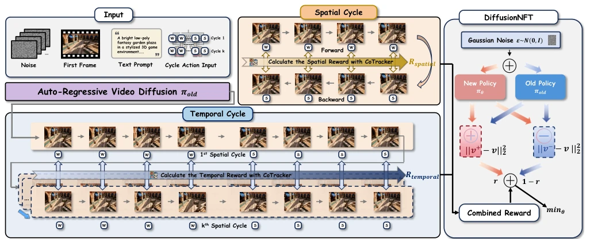
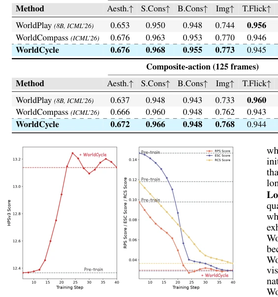
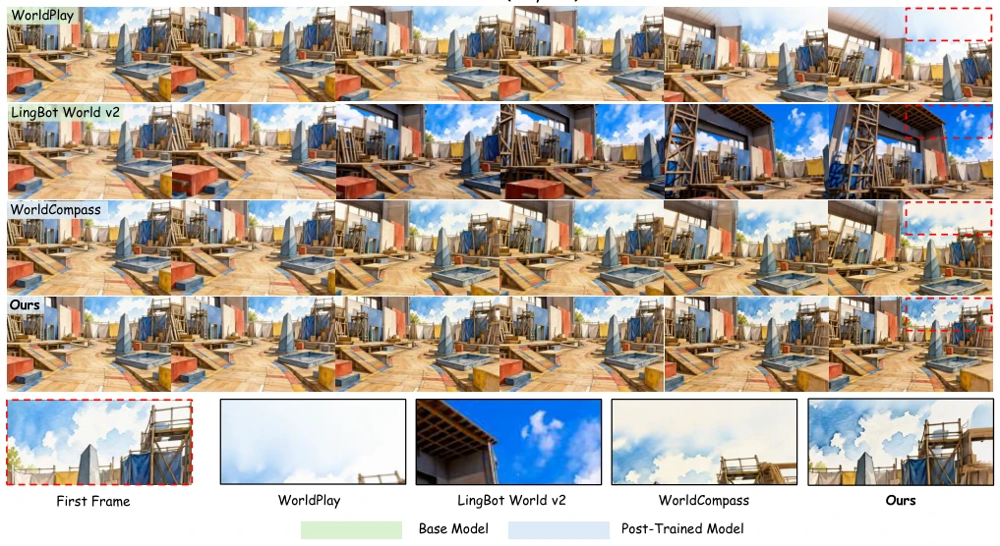

交互式视频世界模型（IWMs）在长视界规划中面临累积误差问题。自回归生成导致单步小误差随 rollout 扩展而放大（Bengio et al. 2015）。现有 RL 后训练方法如 WorldCompass (Wang et al. 2026a) 主要优化短视界视觉质量或单步动作对齐，缺乏长视界真值监督。对于任意动作序列，未来状态未知，无法直接测量累积误差。WorldPlay (Sun et al. 2026) 等模型在复合动作下准确率崩塌。根本障碍在于缺乏有效的长视界验证信号，导致模型学会的是记忆时间模式而非一致的状态算子，无法保证物理几何一致性。
—

Figure 2: Overview of WorldCycle. From ordinary action sequences we construct closed reversible cycles and their repeated executions. The spatial closure reward compares every mirrored forward-reverse frame pair within a single cycle, providing dense supervision on where the trajectory begins to drift. The temporal consistency reward compares phase-aligned frames of the same action across repeated cycles, penalizing drift of identical actions over time. Both rewards are trajectory-level, annotation-free, and jointly optimized with a DiffusionNFT-style objective. Here oi denotes the generated observation at phase i, and d(·, ·) measures the discrepancy between two observations that should correspond to the same underlying state. This mirrored supervision localizes where a reversible traject
Figure 3: Overview of CycleBench. Four complementary tasks probe different aspects of accumulated transition error: T1 measures where error appears along a reversible path; T2 measures the residual after a non-symmetric closed trajectory; T3 tracks error growth across repeated cycles; T4 measures error propagation across structurally different cycles. All tasks are further evaluated under three horizon settings (short/mid/long) and one out-of-domain composite-action setting. where Ract is an action-following score (Wang et al. 2026a) and RHPS is a visual-quality score (Ma et al. 2025). Trajectory-Level Optimization with Efficient Rollouts. Cycle-consistency is a global property: rewards are com- puted over the complete rollout before optimization. The reward design is optimizer-agnostic an
Figure 4: Qualitative comparison on CycleBench (253 frames). Left: composite-action setting (forward+turn then inverse). Right: simple-action setting (forward then backward). Each method row contains eight sampled frames in total, with four keyframes from each setting: two from the outward phase and two from the return phase. The bottom strip shows a cropped zoom of the return frame alongside the first-frame reference for each method. Table 2: Ablation on CycleBench. Left: basic actions across three horizons (short / mid / long). Right: OOD composite actions reported with the full metric set. Reward isolates each cycle signal; Schedule isolates the warm-up-and-combine training order.

Figure 5: Evolution of cycle consistency and visual quality metrics during the RL training of WorldCycle. These metrics are evaluated on a fixed CycleBench validation subset at every training step.

Figure 6: Long-horizon qualitative comparison over five repeated cycles (381 frames). Each row shows sampled frames from the same long-term rollout. The bottom row enlarges the red-boxed region in the final return frame and compares it with the corresponding region in the first frame. LingBot World v2 exhibits severe color drift, most visibly through the increasingly saturated blue sky, whereas WorldPlay and WorldCompass develop pronounced visual artifacts, including whitening in the sky and unnatural linear patterns around the rooftop structure. In contrast, WorldCycle preserves stable colors, textures, and scene content, yielding a final return frame that remains close to the initial observation after all five cycles.